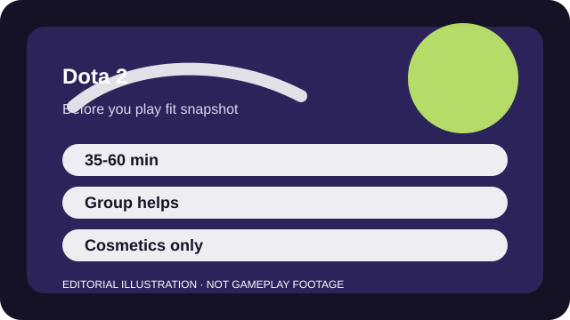

BEFORE YOU PLAY
What this page is and is not
This is a sourced editorial fit profile. It is designed to help with a yes-or-no play decision, and it does not claim a scored hands-on review.
Dota asks whether you enjoy feeling lost for a while in exchange for a much wider strategic sandbox later. If you do, few games match its depth. If you do not, the friction is immediate.
The first-session loop to judge is simple: Draft and pilot heroes, manage item timings, and make enough macro decisions to convert one opening into map control.
The real progression is understanding heroes, timings, and win conditions; account power is minimal.

FIT SNAPSHOT
Dota 2 at a glance
| Genre | MOBA |
|---|---|
| Platforms | PC |
| Business model | Free-to-play strategy game with cosmetic monetization and no power sales. |
| Typical session | 35-60 minute matches that demand sustained attention. |
| Play style | systems-heavy team strategy |
| Learning barrier | Dota 2 is deliberately dense, and nearly every system offers meaningful complexity very early. |
| Social shape | Solo queue is possible, but a patient group or thick skin helps because the game is system-dense and communication-heavy. |
WHO IT FITS
Best fit, likely friction, and the social reality
players who want maximum strategic freedom, long matches, and a ruleset that rewards deep systems knowledge
players who need quick onboarding, short queue commitments, or a gentle social environment
Solo queue is possible, but a patient group or thick skin helps because the game is system-dense and communication-heavy.
The real progression is understanding heroes, timings, and win conditions; account power is minimal.
FIRST SESSION PLAN
How to test the fit in one evening
- Use the official tutorial and bot matches before letting live chaos define the game for you.
- Pick one support hero so the map and item layers stay readable.
- Read item descriptions during downtime instead of trying to memorize everything pre-match.
- Judge the game after you understand why an objective mattered, not after your first scoreboard line.
Use the first session to answer these fit questions instead of judging rank, win rate, or store value immediately.
- Do you enjoy complex rules for their own sake?
- Can you commit to long matches even when the result feels obvious early?
- Are you looking for strategic freedom more than smooth accessibility?
TIME, COST, AND COMMITMENT
What you are really signing up for
| Session budget | 35-60 minute matches that demand sustained attention. |
|---|---|
| Social demand | Solo queue is possible, but a patient group or thick skin helps because the game is system-dense and communication-heavy. |
| Progression shape | The real progression is understanding heroes, timings, and win conditions; account power is minimal. |
| Spending pressure | Core play is free, and spending is mostly cosmetic rather than competitive. |
Matches are long and mentally heavy enough that many players treat one or two strong games as a full session.
Core play is free, and spending is mostly cosmetic rather than competitive.
SOURCES AND LIMITS
What was checked, and what can change
- Hero balance and draft trends can transform what beginners are told to prioritize.
- Tutorial tooling and new-player surfaces can improve or degrade over time.
- Event cosmetics and storefront changes do not alter the core complexity described here.
This profile uses official game pages and defensible general product knowledge to frame the player fit. It does not claim live testing across every platform, accessibility need, or current event rotation.